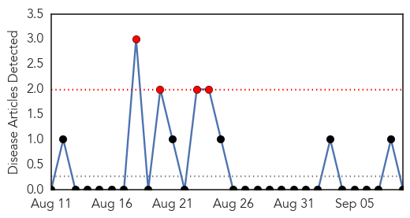
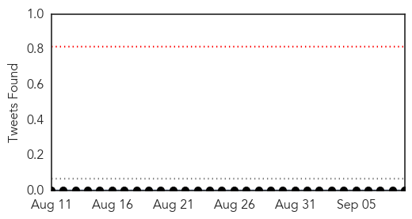

Hemmorhagic Fever
30-Day Web Trend
4 alerts, 0 warnings

30-Day Twitter Trend
0 alerts, 0 warnings

Article Locations

Article Confidences

Top Articles:
-
No articles found for Sep 09, 2014
Top Tweets:
-
No tweets found for Sep 09, 2014
West Nile Virus
30-Day Web Trend
1 alerts, 0 warnings

30-Day Twitter Trend
0 alerts, 0 warnings

Article Locations
Article Confidences
Top Articles:
- 0.987
- Woman, 51, diagnosed with West Nile, Toronto Public Health confirms
- 0.977
- West Nile virus outbreak hits California's Orange County
- 0.972
- West Nile virus outbreak hits California's Orange County
- 0.915
- Life-Threatening Enterovirus Confirmed In Colorado « CBS Denver
- 0.914
- New York City officials confirm 5 human cases of West Nile virus
- 0.617
- Human case of Nile in LaSalle Co.; bird tests positive in Normal
- 0.591
- Dead Birds With West Nile Found in SE Los Angeles County
Top Tweets:
-
No tweets found for Sep 09, 2014